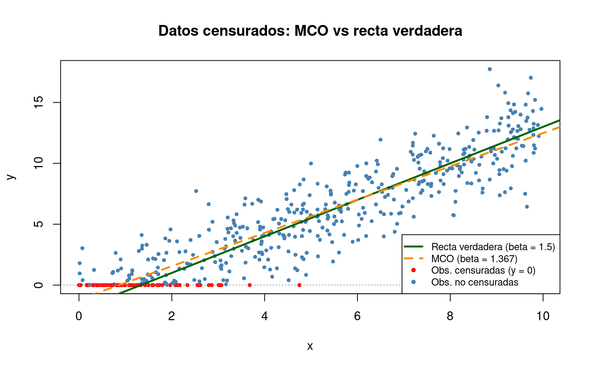
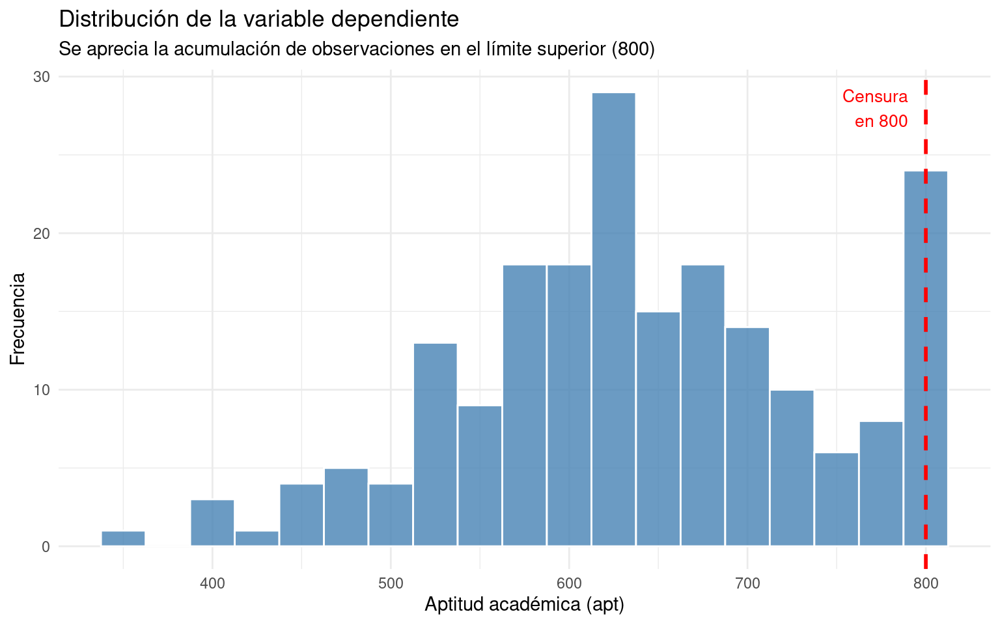
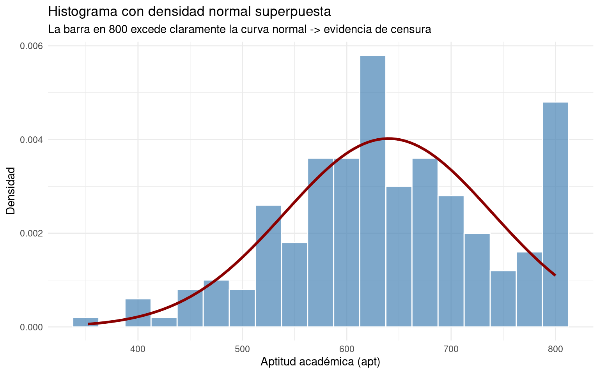
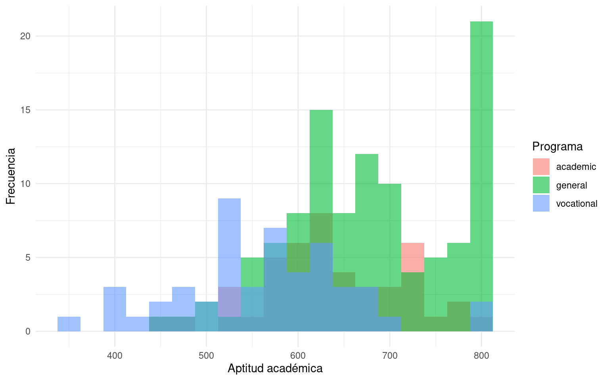
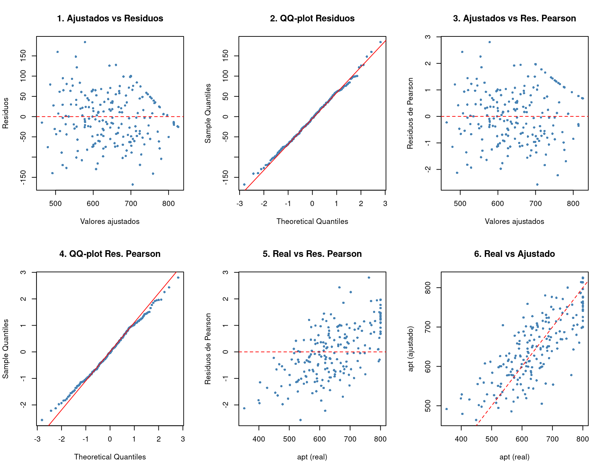

| Ejemplo | Variable | Censura |
|---|---|---|
| Gasto en automóviles | Gasto (€) | Muchas familias gastan 0 (no compran coche) |
| Horas trabajadas | Horas/semana | Muchas personas reportan 0 horas |
| Gasto en vivienda | Gasto (€) | Hogares sin vivienda propia: gasto = 0 |
| Donaciones benéficas | Importe (€) | Muchos contribuyentes donan 0 |
| Aptitud académica | Puntuación | Escala limitada: mínimo 200, máximo 800 |
4 Modelos para Datos Censurados (Tobit)
4.1 Introducción: ¿por qué modelos para datos censurados?
En el Tema 2 estudiamos situaciones en las que la variable dependiente es binaria (\(y \in \{0,1\}\)). Ahora damos un paso más: ¿qué ocurre cuando la variable dependiente es continua, pero no podemos observar todos sus valores?
Esto sucede con frecuencia en economía:
En todos estos casos, hay una acumulación de observaciones en un valor límite (generalmente cero). El problema es que, detrás de esas observaciones con valor cero, existe una variable latente \(y^*\) que puede tomar valores negativos — pero que no observamos, porque el fenómeno real está limitado.
Ejemplo intuitivo: Una persona puede tener un «deseo» negativo de trabajar (preferiría no hacerlo), pero las horas trabajadas que observamos nunca son negativas. Lo que vemos es \(y = 0\), aunque el valor latente \(y^* < 0\).
Si aplicamos MCO directamente a estos datos, obtendremos estimaciones sesgadas e inconsistentes. El modelo Tobit (James Tobin, 1958) resuelve este problema especificando correctamente la verosimilitud para datos censurados.
En estos apuntes se abordará en primer lugar la definición precisa de la censura y sus distintas variantes (por la izquierda, por la derecha y bilateral). A continuación se planteará el modelo Tobit con su función de verosimilitud y se demostrará formalmente por qué MCO produce estimaciones sesgadas e inconsistentes cuando se aplica a datos censurados. El núcleo del capítulo lo constituye la interpretación de los coeficientes mediante las tres medias condicionales y sus correspondientes efectos marginales. El tema incluye también las pruebas de especificación necesarias para validar los supuestos del modelo, y concluye con un ejemplo práctico completo en R que ilustra todo el proceso de estimación, interpretación y diagnóstico.
4.2 Datos censurados: conceptos básicos
4.2.1 ¿Qué es la censura?
La censura se produce cuando el valor de la variable dependiente no se observa para parte de la muestra, aunque sí disponemos de información sobre las variables explicativas.
Atención: La censura no es lo mismo que los datos faltantes. En los datos censurados, sabemos que la observación existe y conocemos las \(X\), pero el valor exacto de \(y\) está limitado por un umbral. En los datos faltantes, directamente no tenemos la observación.
Formalmente, disponemos de una muestra de \(n\) individuos. Para cada individuo \(i\):
- Observamos las variables explicativas \(\mathbf{x}_i\) siempre.
- La variable dependiente \(y_i\) solo se observa en su valor real si cae dentro de cierto rango; si cae fuera, se registra en el valor límite.
4.2.2 Censura por la izquierda
Es el caso más habitual en economía. Se dice que los datos presentan censura por la izquierda cuando:
\[ y_i = \begin{cases} y_i^* & \text{si } y_i^* > c \\ c & \text{si } y_i^* \leq c \end{cases} \]
donde \(c\) es el punto de censura (a menudo \(c = 0\)) y \(y_i^*\) es la variable latente (el valor verdadero no observado).
Ejemplo: En un estudio sobre horas trabajadas, \(y^*\) es el «deseo» de trabajar. Si \(y^* > 0\), observamos las horas reales. Si \(y^* \leq 0\), la persona no trabaja y registramos \(y = 0\).
4.2.3 Censura por la derecha
Se produce cuando la variable dependiente está acotada superiormente:
\[ y_i = \begin{cases} y_i^* & \text{si } y_i^* < c \\ c & \text{si } y_i^* \geq c \end{cases} \]
Ejemplo: En una prueba de aptitud académica con puntuación máxima de 800, los estudiantes que realmente tendrían una aptitud superior a 800 reciben todos una puntuación de 800. No sabemos cuánto más habrían puntuado si la escala no tuviera tope.
4.2.4 Censura en ambos lados
En algunos casos, la censura se produce en ambos extremos simultáneamente:
\[ y_i = \begin{cases} a & \text{si } y_i^* \leq a \\ y_i^* & \text{si } a < y_i^* < b \\ b & \text{si } y_i^* \geq b \end{cases} \]
Ejemplo: La prueba de aptitud académica con puntuación mínima 200 y máxima 800. Hay censura por la izquierda en 200 y por la derecha en 800.
4.2.5 La variable latente \(y^*\)
El concepto clave para entender la censura es la variable latente \(y^*\). Esta es la variable que realmente queremos medir, pero que no siempre podemos observar.
Pensemos en ello con una analogía:
Analogía del termómetro: Imagina un termómetro que solo mide entre \(-10°\)C y \(50°\)C. Si la temperatura real es \(-25°\)C, el termómetro marca \(-10°\)C. Si es \(60°\)C, marca \(50°\)C. La temperatura real (\(y^*\)) existe, pero el instrumento de medición (\(y\)) la censura.
En economía, la «censura» no la produce un instrumento defectuoso, sino la propia naturaleza del fenómeno: no se pueden trabajar horas negativas, no se puede gastar menos de cero euros, etc.
4.2.6 La densidad de datos censurados: una mezcla discreta-continua
Aquí viene un punto técnicamente importante. La distribución de \(y\) (la variable observada) es una mezcla de:
- Una parte continua: para las observaciones no censuradas (\(y > c\)), la densidad es la habitual \(f(y)\).
- Una parte discreta: para las observaciones censuradas (\(y = c\)), hay una «masa de probabilidad» concentrada en el punto \(c\).
Para el caso de censura por la izquierda en \(c = 0\) con distribución normal:
\[ \text{Densidad de } y_i = \begin{cases} \frac{1}{\sigma}\phi\!\left(\frac{y_i - \mathbf{x}_i\boldsymbol{\beta}}{\sigma}\right) & \text{si } y_i > 0 \quad \text{(parte continua)} \\[6pt] \Phi\!\left(\frac{-\mathbf{x}_i\boldsymbol{\beta}}{\sigma}\right) & \text{si } y_i = 0 \quad \text{(masa en cero)} \end{cases} \]
donde:
- \(\phi(\cdot)\) es la función de densidad de la normal estándar.
- \(\Phi(\cdot)\) es la función de distribución acumulada (CDF) de la normal estándar.
- \(\sigma\) es la desviación típica del término de error.
¿Por qué \(\Phi(-\mathbf{x}_i\boldsymbol{\beta}/\sigma)\)? Porque la probabilidad de que \(y_i = 0\) es la probabilidad de que la variable latente sea negativa: \(P(y_i^* \leq 0) = P(\mathbf{x}_i\boldsymbol{\beta} + \varepsilon_i \leq 0) = P(\varepsilon_i \leq -\mathbf{x}_i\boldsymbol{\beta}) = \Phi(-\mathbf{x}_i\boldsymbol{\beta}/\sigma)\).
Este carácter híbrido (mezcla de discreto y continuo) es la razón por la que no podemos usar MCO directamente y necesitamos un modelo específico: el Tobit.
4.3 El modelo Tobit
4.3.1 Origen
El modelo Tobit fue propuesto por James Tobin en 1958, en un artículo titulado «Estimation of relationships for limited dependent variables» publicado en Econometrica. Tobin lo aplicó al estudio del gasto en bienes de consumo duraderos (automóviles): muchos hogares no compraban coche (gasto = 0), pero los que sí lo hacían mostraban una amplia variación en el gasto.
El nombre «Tobit» es un juego de palabras que combina «Tobin» con «Probit», ya que ambos modelos comparten el uso de la distribución normal.
4.3.2 Especificación del modelo
El modelo Tobit estándar (con censura por la izquierda en cero) se define en dos ecuaciones:
Ecuación latente: \[ y_i^* = \mathbf{x}_i\boldsymbol{\beta} + \varepsilon_i, \qquad \varepsilon_i \sim N(0, \sigma^2) \]
Regla de observación: \[ y_i = \begin{cases} y_i^* & \text{si } y_i^* > 0 \\ 0 & \text{si } y_i^* \leq 0 \end{cases} \]
Supuestos clave:
- El error \(\varepsilon_i\) se distribuye normalmente con media cero y varianza \(\sigma^2\).
- El error es homocedástico (la varianza no depende de \(\mathbf{x}_i\)).
- El error es independiente de las variables explicativas.
Importante: Si estos supuestos no se cumplen (especialmente la normalidad y la homocedasticidad), las estimaciones del modelo Tobit serán inconsistentes. Esto es una diferencia importante con MCO, donde la heterocedasticidad causa ineficiencia pero no inconsistencia.
4.3.3 Ejemplos económicos clásicos
4.3.3.1 Horas trabajadas (Tobin, 1958; Mroz, 1987)
El ejemplo histórico más célebre del modelo Tobit es el análisis de las horas trabajadas. La variable latente \(y_i^*\) representa el «deseo de trabajar» medido en horas semanales, que puede ser positivo, cero o incluso negativo (una persona que preferiría no trabajar en absoluto). Sin embargo, la variable observada \(y_i\) son las horas efectivamente trabajadas, que nunca pueden ser negativas. El modelo se especifica como:
\[y_i^* = \beta_0 + \beta_1 \, \text{salario\_potencial}_i + \beta_2 \, \text{educación}_i + \beta_3 \, \text{edad}_i + \beta_4 \, \text{hijos}_i + \beta_5 \, \text{renta\_no\_laboral}_i + \varepsilon_i\]
con regla de observación \(y_i = \max(0, y_i^*)\). La censura es por la izquierda en cero: las personas que no trabajan (\(y_i = 0\)) coexisten con quienes sí lo hacen (\(y_i > 0\)).
4.3.3.2 Gasto en automóviles
Otro ejemplo clásico es el gasto en automóviles. La variable latente \(y_i^*\) puede interpretarse como la utilidad neta que un hogar obtiene de comprar un coche, medida en euros. Cuando esa utilidad es positiva, el hogar compra y observamos el gasto real; cuando es negativa o cero, el hogar no compra y el gasto observado es cero. El modelo adopta la forma:
\[y_i^* = \beta_0 + \beta_1 \, \text{renta}_i + \beta_2 \, \text{tamaño\_familiar}_i + \beta_3 \, \text{distancia\_trabajo}_i + \varepsilon_i\]
con censura por la izquierda en cero. La proporción de hogares con gasto nulo puede ser elevada (del 30% al 60% según el país y el periodo), lo que hace especialmente relevante el uso del Tobit frente al MCO.
4.3.3.3 Aptitud académica (ejemplo que desarrollaremos en R)
El tercer ejemplo, que utilizaremos en la sección práctica, es la aptitud académica de estudiantes universitarios. La variable latente \(y_i^*\) es la aptitud real del estudiante, que en principio no tiene límites. Sin embargo, la prueba de medición asigna puntuaciones en una escala de 200 a 800, generando censura bilateral: los estudiantes con aptitud latente superior a 800 reciben todos una puntuación de 800 (censura por la derecha), y los que tendrían menos de 200 recibirían 200 (censura por la izquierda).
4.3.4 La función de log-verosimilitud
Dividimos la muestra en dos grupos:
- Observaciones no censuradas (\(y_i > 0\)): contribuyen con la densidad normal habitual.
- Observaciones censuradas (\(y_i = 0\)): contribuyen con la probabilidad de que \(y_i^* \leq 0\).
4.3.4.1 Derivación componente a componente
Para formalizar el modelo, partimos de que la variable latente sigue: \(y_i^* = \mathbf{x}_i\boldsymbol{\beta} + \epsilon_i\) con \(\epsilon_i \sim N(0, \sigma^2)\).
Para las observaciones no censuradas (\(y_i > 0\), es decir, \(y_i^* > 0\)): - Observamos el valor real de \(y_i\). - La contribución a la verosimilitud es la densidad normal evaluada en \(y_i\): \[f(y_i | \mathbf{x}_i) = \frac{1}{\sigma}\phi\!\left(\frac{y_i - \mathbf{x}_i\boldsymbol{\beta}}{\sigma}\right)\]
Para las observaciones censuradas (\(y_i = 0\), es decir, \(y_i^* \leq 0\)): - Solo sabemos que el valor latente es negativo o cero. - La contribución a la verosimilitud es la función de distribución acumulada (CDF): \[P(y_i = 0 | \mathbf{x}_i) = P(y_i^* \leq 0 | \mathbf{x}_i) = \Phi\!\left(\frac{-\mathbf{x}_i\boldsymbol{\beta}}{\sigma}\right)\]
4.3.4.2 La función de log-verosimilitud completa
Combinando ambos componentes:
\[ \ln L(\boldsymbol{\beta}, \sigma) = \sum_{i: y_i = 0} \ln\!\left[\Phi\!\left(\frac{-\mathbf{x}_i\boldsymbol{\beta}}{\sigma}\right)\right] + \sum_{i: y_i > 0} \left\{\ln\!\left[\frac{1}{\sigma}\phi\!\left(\frac{y_i - \mathbf{x}_i\boldsymbol{\beta}}{\sigma}\right)\right]\right\} \]
O, simplificada:
\[ \ln L = \sum_{y_i = 0} \ln\!\left[\Phi\!\left(\frac{-\mathbf{x}_i\boldsymbol{\beta}}{\sigma}\right)\right] + \sum_{y_i > 0} \left[-\frac{1}{2}\ln(2\pi\sigma^2) - \frac{(y_i - \mathbf{x}_i\boldsymbol{\beta})^2}{2\sigma^2}\right] \]
Interpretación intuitiva:
- Primer sumatorio (datos censurados): modelamos la probabilidad discreta de estar en el punto 0. Es exactamente como una ecuación Probit.
- Segundo sumatorio (datos no censurados): modelamos la densidad continua de los valores observados. Es exactamente como una regresión MCO normal.
El modelo Tobit es un híbrido elegante que combina la lógica de un modelo de respuesta binaria (Probit) para la decisión de estar censurado o no, con una regresión clásica para los valores observados.
4.3.4.3 Ejemplo numérico: cálculo paso a paso de la log-verosimilitud
Para comprender cómo funciona la log-verosimilitud del Tobit en la práctica, vamos a calcularla manualmente con una muestra mínima de tres observaciones. El objetivo es ver exactamente qué aporta cada individuo a la función que el algoritmo de optimización intenta maximizar.
Supongamos que el modelo es \(y_i^* = \beta_0 + \beta_1 x_i + \varepsilon_i\) con censura en cero, y que los parámetros candidatos son \(\beta_0 = 0.5\), \(\beta_1 = 1.0\) y \(\sigma = 2\). Nuestra muestra tiene tres individuos:
Observación 1: \(x_1 = 2\), \(y_1 = 0\) (la persona no trabaja — observación censurada).
El valor predicho de la variable latente es \(\hat{y}_1^* = 0.5 + 1.0 \times 2 = 2.5\). El modelo predice que esta persona debería querer trabajar 2.5 horas, pero observamos 0. ¿Cómo de probable es esto? Necesitamos calcular la probabilidad de que \(y^* \leq 0\), es decir, \(P(\varepsilon_1 \leq -2.5)\). Estandarizando: \(z_1 = -2.5/2 = -1.25\). La probabilidad es \(\Phi(-1.25) = 0.1056\). Es una probabilidad baja (el modelo no predice bien esta censura con estos parámetros). La contribución a la log-verosimilitud es \(\ln(0.1056) = -2.25\).
Observación 2: \(x_2 = 3\), \(y_2 = 5.3\) (la persona trabaja 5.3 horas — observación no censurada).
El valor predicho es \(\hat{y}_2^* = 0.5 + 1.0 \times 3 = 3.5\). El valor observado es 5.3, así que el residuo es \(5.3 - 3.5 = 1.8\). Para esta observación usamos la densidad normal, no la CDF. El residuo estandarizado es \(1.8/2 = 0.9\). La contribución a la log-verosimilitud se calcula como \(\ln\left[\frac{1}{\sigma}\phi\left(\frac{y_2 - \hat{y}_2^*}{\sigma}\right)\right]\), que desarrollando paso a paso da: \(-\frac{1}{2}\ln(2\pi \times 4) - \frac{1.8^2}{2 \times 4} = -1.84 - 0.405 = -2.245\).
Observación 3: \(x_3 = 1\), \(y_3 = 0\) (censurada).
El valor predicho es \(\hat{y}_3^* = 0.5 + 1.0 \times 1 = 1.5\), con \(z_3 = -1.5/2 = -0.75\) y \(\Phi(-0.75) = 0.2266\). La probabilidad de censura es mayor que para la observación 1, porque el predictor es menor. Contribución: \(\ln(0.2266) = -1.489\).
Log-verosimilitud total: sumamos las tres contribuciones: \(-2.25 + (-2.245) + (-1.489) = -5.984\).
Este valor de \(-5.984\) corresponde a los parámetros candidatos \((\beta_0 = 0.5, \beta_1 = 1.0, \sigma = 2)\). El algoritmo de estimación prueba sistemáticamente otras combinaciones de parámetros hasta encontrar aquella que produce la log-verosimilitud más alta posible (menos negativa). Esa combinación óptima es la estimación de máxima verosimilitud.
4.3.5 La reparametrización de Olsen (1978)
La estimación del modelo Tobit por máxima verosimilitud requiere que un algoritmo numérico encuentre los valores de \(\boldsymbol{\beta}\) y \(\sigma\) que maximizan la función \(\ln L(\boldsymbol{\beta}, \sigma)\). A diferencia de MCO, donde existe una fórmula cerrada \((\mathbf{X}'\mathbf{X})^{-1}\mathbf{X}'\mathbf{y}\), en el Tobit no hay solución analítica: la presencia simultánea de \(\Phi(\cdot)\) y \(\phi(\cdot)\) en la log-verosimilitud impide despejar los parámetros. Por tanto, se recurre a métodos iterativos como Newton-Raphson o BFGS, que parten de unos valores iniciales y los van refinando hasta alcanzar el máximo.
En la práctica, la maximización directa con respecto a \((\boldsymbol{\beta}, \sigma)\) puede presentar dificultades numéricas. Los parámetros \(\boldsymbol{\beta}\) y \(\sigma\) operan en escalas muy diferentes (los coeficientes pueden valer 0.5 mientras que \(\sigma\) vale 3), lo que dificulta la convergencia del algoritmo. Además, cuando la proporción de observaciones censuradas es alta o la varianza es pequeña, la superficie de la log-verosimilitud puede ser muy plana en algunas direcciones, provocando que el algoritmo avance lentamente o se detenga antes de alcanzar el óptimo.
Olsen (1978) propuso una transformación que resuelve estas dificultades de forma elegante. En lugar de estimar directamente \((\boldsymbol{\beta}, \sigma)\), se definen dos nuevos parámetros:
\[ \gamma = \frac{\boldsymbol{\beta}}{\sigma}, \qquad \lambda = \frac{1}{\sigma} \]
La ventaja de esta transformación es que los nuevos parámetros \((\gamma, \lambda)\) operan en escalas más similares entre sí, lo que facilita el trabajo del algoritmo de optimización. La superficie de la log-verosimilitud expresada en términos de \((\gamma, \lambda)\) tiene una curvatura más regular, lo que permite que el algoritmo converja más rápidamente y con mayor estabilidad numérica.
Con esta reparametrización, la log-verosimilitud se reescribe como:
\[ \ln L(\gamma, \lambda) = \sum_{y_i = 0} \ln\!\left[\Phi\!\left(-\mathbf{x}_i\gamma\right)\right] + \sum_{y_i > 0} \left\{\ln(\lambda) - \frac{\lambda^2}{2}(y_i - \mathbf{x}_i\gamma/\lambda)^2\right\} \]
Una vez que el algoritmo encuentra los valores óptimos \((\hat{\gamma}, \hat{\lambda})\), la recuperación de los parámetros originales es inmediata:
\[ \hat{\sigma} = \frac{1}{\hat{\lambda}}, \qquad \hat{\boldsymbol{\beta}} = \frac{\hat{\gamma}}{\hat{\lambda}} \]
En la práctica, el usuario no necesita preocuparse de esta transformación: los paquetes de software (como censReg o AER en R) la implementan internamente de forma transparente. El usuario especifica el modelo y obtiene directamente las estimaciones de \(\hat{\boldsymbol{\beta}}\) y \(\hat{\sigma}\), ya reconvertidas a la escala original.
Desde una perspectiva histórica, la reparametrización de Olsen fue un avance importante en los años setenta, cuando la capacidad de cálculo era muy limitada. James Tobin había propuesto el modelo en 1958, pero su estimación práctica no fue viable hasta que Olsen resolvió los problemas numéricos. Hoy, aunque los ordenadores son incomparablemente más potentes, la reparametrización sigue siendo el método estándar porque mejora de forma significativa la velocidad y la fiabilidad de la convergencia.
4.4 ¿Por qué MCO no funciona con datos censurados?
Esta sección demuestra formalmente y con datos simulados que la estimación por MCO de un modelo con datos censurados produce resultados sesgados e inconsistentes. Comprender por qué falla MCO es esencial para justificar la necesidad del modelo Tobit.
4.4.1 El sesgo de MCO: explicación detallada
Consideremos el siguiente modelo generador de datos con censura por la izquierda en cero:
\[y_i^* = \beta_0 + \beta_1 x_i + \varepsilon_i, \qquad \varepsilon_i \sim N(0, \sigma^2)\] \[y_i = \max(0,\; y_i^*)\]
Supongamos que los valores verdaderos son \(\beta_0 = -2\), \(\beta_1 = 1.5\) y \(\sigma = 2\). Si aplicásemos MCO directamente a la variable observada \(y_i\) (sin tener en cuenta la censura), la estimación de la pendiente \(\hat{\beta}_1^{MCO}\) resultaría sistemáticamente inferior al valor verdadero de 1.5. Este fenómeno se conoce como sesgo de atenuación y tiene una explicación intuitiva clara.
Cuando la variable latente \(y_i^*\) es negativa, la variable observada se registra como \(y_i = 0\). MCO trata esos ceros como si fueran valores reales del fenómeno, cuando en realidad son un artefacto de la censura. Al incluir estas observaciones «aplastadas» en el cálculo, la recta de regresión se «tira hacia abajo», reduciendo la pendiente estimada. Cuanto mayor sea la proporción de observaciones censuradas, mayor será la atenuación.
El segundo problema, aún más grave, es que MCO es inconsistente: el sesgo no desaparece al aumentar el tamaño muestral. Por muchas observaciones que añadamos, la estimación MCO converge a un valor distinto del verdadero. Esto contrasta con otros problemas de MCO (como la heterocedasticidad en modelos lineales), donde el estimador sigue siendo consistente aunque sea ineficiente.
4.4.2 Demostración visual en R
Code
set.seed(42)
n <- 500
## Generamos la variable latente y*
x <- runif(n, 0, 10)
y_star <- -2 + 1.5 * x + rnorm(n, 0, 2) # Beta verdadero = 1.5
## Variable observada (censurada en 0)
y <- pmax(y_star, 0)
## Proporción censurada
cat("Proporción de observaciones censuradas:", mean(y == 0), "\n")
## Regresión MCO
mco <- lm(y ~ x)
## Gráfico
plot(x, y, pch = 16, col = ifelse(y == 0, "red", "steelblue"),
cex = 0.7, xlab = "x", ylab = "y",
main = "Datos censurados: MCO vs recta verdadera")
abline(h = 0, lty = 3, col = "grey60")
abline(a = -2, b = 1.5, col = "darkgreen", lwd = 2.5) # Recta verdadera
abline(mco, col = "darkorange", lwd = 2.5, lty = 2) # Recta MCO
legend("bottomright",
legend = c("Recta verdadera (beta = 1.5)",
paste0("MCO (beta = ", round(coef(mco)[2], 3), ")"),
"Obs. censuradas (y = 0)",
"Obs. no censuradas"),
col = c("darkgreen", "darkorange", "red", "steelblue"),
pch = c(NA, NA, 16, 16), lty = c(1, 2, NA, NA), lwd = c(2.5, 2.5, NA, NA),
cex = 0.8, bg = "white")
Observa: Los puntos rojos son las observaciones censuradas. La recta MCO (naranja discontinua) tiene una pendiente menor que la verdadera (verde). Esto es el sesgo de atenuación.
4.4.3 Comparación numérica: MCO vs Tobit
Code
library(censReg)
## Estimación Tobit
tobit_sim <- censReg(y ~ x, left = 0)
## Comparación
comparacion <- data.frame(
Parámetro = c("Intercepto", "Pendiente (β)", "σ"),
Verdadero = c(-2, 1.5, 2),
MCO = c(round(coef(mco)[1], 3), round(coef(mco)[2], 3), round(summary(mco)$sigma, 3)),
Tobit = round(c(coef(tobit_sim)[1], coef(tobit_sim)[2], exp(coef(tobit_sim)[3])), 3)
)
knitr::kable(comparacion, caption = "Comparación de estimaciones: MCO vs Tobit")| Parámetro | Verdadero | MCO | Tobit | |
|---|---|---|---|---|
| (Intercept) | Intercepto | -2.0 | -1.182 | -2.111 |
| x | Pendiente (β) | 1.5 | 1.367 | 1.498 |
| σ | 2.0 | 1.832 | 2.005 |
Resultado esperado: El Tobit recupera valores cercanos a los verdaderos (\(\beta \approx 1.5\), \(\sigma \approx 2\)), mientras que MCO subestima la pendiente.
4.5 Interpretación de los coeficientes
Esta es, probablemente, la sección más importante del tema para la práctica aplicada. En regresión lineal, interpretar un coeficiente es directo: «un aumento de una unidad en \(x_j\) se asocia con un cambio de \(\beta_j\) unidades en \(y\)». En el modelo Tobit, la interpretación no es tan sencilla, porque la relación entre \(\mathbf{x}\) e \(y\) no es lineal debido a la censura.
Regla de oro: En el Tobit, el coeficiente \(\beta_j\) NO es el efecto marginal sobre la variable observada. Hay que ajustarlo.
4.5.1 ¿Por qué los coeficientes no son directamente efectos marginales?
En regresión lineal: \(E(y \mid \mathbf{x}) = \mathbf{x}\boldsymbol{\beta}\), luego \(\frac{\partial E(y)}{\partial x_j} = \beta_j\). Simple.
En el modelo Tobit, la censura introduce una no linealidad. La variable observada \(y\) no es igual a \(y^*\): hay una «deformación» en el punto de censura. Por tanto, el efecto de \(x_j\) sobre \(E(y)\) depende de:
- Dónde estamos en la distribución (el valor de \(\mathbf{x}\boldsymbol{\beta}/\sigma\)).
- Qué pregunta nos hacemos (¿efecto sobre la latente? ¿sobre los no censurados? ¿sobre todos?).
Esto da lugar a tres medias condicionales diferentes, cada una con su propio efecto marginal.
4.5.2 Las tres medias condicionales: derivación detallada
4.5.2.1 Media condicional 1: la variable latente \(E(y^* \mid \mathbf{x})\)
Esta es la más sencilla. Como \(y_i^* = \mathbf{x}_i\boldsymbol{\beta} + \varepsilon_i\) con \(E(\varepsilon_i) = 0\):
\[ E(y^* \mid \mathbf{x}) = \mathbf{x}\boldsymbol{\beta} \]
Efecto marginal: \[ \frac{\partial E(y^* \mid \mathbf{x})}{\partial x_j} = \beta_j \]
Interpretación: Es el efecto sobre la variable latente (el «deseo» de trabajar, la aptitud «real»). Es exactamente como en regresión lineal, pero se refiere a una variable que no siempre observamos.
¿Cuándo usarla? Cuando la pregunta de investigación se refiere al proceso latente subyacente. Por ejemplo: «¿cómo afecta la educación al deseo de trabajar?».
4.5.2.2 Media condicional 2: \(E(y \mid \mathbf{x}, y > 0)\) — el valor esperado para los no censurados
Esta media responde a: «dado que la persona sí trabaja (o sí compra coche, etc.), ¿cuánto trabaja (o gasta)?».
Derivación desde los fundamentos:
Partimos de la esperanza condicional de una normal truncada. Si \(y^* \sim N(\mu, \sigma^2)\) y condicionamos a \(y^* > 0\):
\[ E(y^* \mid y^* > 0) = \mu + \sigma \cdot \frac{\phi(\mu/\sigma)}{\Phi(\mu/\sigma)} \]
Este es un resultado estándar de la distribución normal truncada (véase Greene, 2012, Apéndice B). El término \(\frac{\phi(\mu/\sigma)}{\Phi(\mu/\sigma)}\) se llama Inverse Mills Ratio (IMR).
Sustituyendo \(\mu = \mathbf{x}\boldsymbol{\beta}\):
\[ \boxed{E(y \mid \mathbf{x}, y > 0) = \mathbf{x}\boldsymbol{\beta} + \sigma \cdot \frac{\phi(\mathbf{x}\boldsymbol{\beta}/\sigma)}{\Phi(\mathbf{x}\boldsymbol{\beta}/\sigma)}} \]
¿Qué es el Inverse Mills Ratio (IMR)?
Definimos \(\lambda(z) = \frac{\phi(z)}{\Phi(z)}\), donde \(z = \mathbf{x}\boldsymbol{\beta}/\sigma\). El IMR tiene propiedades importantes:
- Siempre es positivo: \(\lambda(z) > 0\) para todo \(z\).
- Es decreciente en \(z\): cuanto mayor es \(z\), menor es \(\lambda(z)\).
- Intuición: Cuando \(z\) es grande (la persona tiene alta probabilidad de no estar censurada), el IMR es pequeño y \(E(y \mid y > 0) \approx \mathbf{x}\boldsymbol{\beta}\). Cuando \(z\) es bajo (alta probabilidad de censura), el IMR «empuja» la media hacia arriba, porque estamos condicionando a los que sí superan el umbral.
Efecto marginal: \[ \frac{\partial E(y \mid \mathbf{x}, y > 0)}{\partial x_j} = \beta_j \left[1 - \lambda(z)\Big(z + \lambda(z)\Big)\right] \]
El factor entre corchetes siempre está entre 0 y 1, por lo que el efecto sobre los no censurados es menor que \(\beta_j\).
¿Cuándo usarla? Cuando nos interesa el margen intensivo: «dado que la persona ya trabaja, ¿cuántas horas más trabajaría si tuviera más educación?».
4.5.2.3 Media condicional 3: \(E(y \mid \mathbf{x})\) — el valor esperado para toda la muestra
Esta es la media más utilizada en la práctica, porque combina dos efectos:
- La probabilidad de no estar censurado.
- El valor esperado condicional a no estarlo.
Derivación:
Usando la ley de esperanzas iteradas:
\[ E(y \mid \mathbf{x}) = P(y > 0 \mid \mathbf{x}) \cdot E(y \mid \mathbf{x}, y > 0) + P(y = 0 \mid \mathbf{x}) \cdot 0 \]
Sabemos que \(P(y > 0 \mid \mathbf{x}) = \Phi(\mathbf{x}\boldsymbol{\beta}/\sigma)\) y el segundo término es cero, luego:
\[ \boxed{E(y \mid \mathbf{x}) = \Phi\!\left(\frac{\mathbf{x}\boldsymbol{\beta}}{\sigma}\right) \cdot \left[\mathbf{x}\boldsymbol{\beta} + \sigma \cdot \frac{\phi(\mathbf{x}\boldsymbol{\beta}/\sigma)}{\Phi(\mathbf{x}\boldsymbol{\beta}/\sigma)}\right]} \]
Efecto marginal (fórmula aproximada de McDonald y Moffitt, 1980):
Se puede demostrar que:
\[ \frac{\partial E(y \mid \mathbf{x})}{\partial x_j} \approx \beta_j \cdot \Phi\!\left(\frac{\mathbf{x}\boldsymbol{\beta}}{\sigma}\right) \]
El factor \(\Phi(\mathbf{x}\boldsymbol{\beta}/\sigma)\) es simplemente la probabilidad de no estar censurado. Esto tiene una interpretación muy elegante:
Interpretación: El efecto marginal total es el coeficiente \(\beta_j\) multiplicado por la probabilidad de que la observación esté en la zona no censurada. Si casi todos están censurados (\(\Phi \approx 0\)), el efecto es casi nulo. Si casi nadie está censurado (\(\Phi \approx 1\)), el efecto es prácticamente \(\beta_j\).
¿Cuándo usarla? Cuando nos interesa el efecto total para toda la población, incluyendo tanto el cambio en la probabilidad de pasar de censurado a no censurado como el cambio en la cantidad para los que ya están no censurados.
4.5.3 Tabla resumen: las tres medias condicionales
| Media | Nombre | Efecto marginal | Pregunta que responde | Ejemplo |
|---|---|---|---|---|
| \(E(y^* \mid \mathbf{x})\) | Variable latente | \(\beta_j\) | ¿Cómo cambia el deseo latente? | Efecto de educación sobre deseo de trabajar |
| \(E(y \mid \mathbf{x},\, y > 0)\) | No censuradas (truncada) | \(\beta_j \times [1 - \lambda(z + \lambda)]\) | Dado que ya trabaja, ¿cuánto más? | Si ya trabaja, ¿cuántas horas más por año de educación? |
| \(E(y \mid \mathbf{x})\) | Toda la muestra | \(\beta_j \times \Phi(\mathbf{x}\boldsymbol{\beta}/\sigma)\) | ¿Cuánto cambia para TODOS? | Efecto total sobre horas trabajadas (incluye los que no trabajan) |
Relación entre las tres: Siempre se cumple que el efecto marginal sobre \(E(y^*)\) (latente) es mayor que sobre \(E(y \mid y > 0)\) (no censuradas), que a su vez es mayor que sobre \(E(y)\) (toda la muestra).
4.5.4 Relación entre \(\hat{\beta}_{MCO}\) y \(\hat{\beta}_{Tobit}\)
Un resultado empírico bien conocido es que, casi sin excepción:
\[ |\hat{\beta}_{MCO}| < |\hat{\beta}_{Tobit}| \]
¿Por qué? MCO trata las observaciones censuradas (\(y = 0\)) como si fueran datos reales. Estas observaciones «tiran hacia abajo» de la recta de regresión, reduciendo los coeficientes estimados. El Tobit, al modelizar correctamente la censura, «sabe» que detrás de esos ceros hay valores latentes negativos y estima pendientes más pronunciadas.
¿Cuándo es grande la diferencia?
- Si la proporción de observaciones censuradas es alta (>30-40%), la diferencia MCO-Tobit puede ser sustancial.
- Si la proporción es baja (<5%), ambas estimaciones serán similares.
- Los signos y la significación suelen coincidir en ambos métodos.
4.5.5 Reglas de interpretación de coeficientes
4.5.5.1 Regla 1: Variables continuas
Para una variable continua \(x_j\) (por ejemplo, años de educación):
- Coeficiente \(\hat{\beta}_j\): «Un aumento de una unidad en \(x_j\) se asocia con un cambio de \(\hat{\beta}_j\) unidades en la variable latente \(y^*\)».
- Efecto marginal sobre \(E(y)\): «Un aumento de una unidad en \(x_j\) se asocia con un cambio de \(\hat{\beta}_j \times \Phi(\mathbf{x}\hat{\boldsymbol{\beta}}/\hat{\sigma})\) unidades en la variable observada \(y\), evaluado en el punto \(\mathbf{x}\)».
4.5.5.2 Regla 2: Variables categóricas (dummies)
Para una variable dummy \(d_j\) (por ejemplo, programa vocacional vs. académico):
- Coeficiente \(\hat{\beta}_j\): «Las observaciones con \(d_j = 1\) tienen, en promedio, \(\hat{\beta}_j\) unidades más (o menos) de variable latente que las de la categoría base».
- Efecto marginal: Se calcula como la diferencia en \(E(y \mid \mathbf{x})\) cambiando \(d_j\) de 0 a 1 (no es simplemente \(\hat{\beta}_j \times \Phi(z)\), aunque esta es una buena aproximación).
4.5.5.3 Regla 3: El signo siempre coincide
En el modelo Tobit, el signo del coeficiente \(\hat{\beta}_j\) coincide con el signo del efecto marginal sobre cualquiera de las tres medias condicionales. Si \(\hat{\beta}_j > 0\), el efecto es positivo en las tres.
4.5.5.4 Regla 4: La magnitud depende de \(\Phi(z)\)
El «factor de escala» \(\Phi(\mathbf{x}\boldsymbol{\beta}/\sigma)\) determina cuánto se atenúa el coeficiente:
- \(\Phi(z) \approx 1\) (poca censura en ese punto): el efecto marginal \(\approx \beta_j\).
- \(\Phi(z) \approx 0.5\) (censura moderada): el efecto marginal \(\approx 0.5 \times \beta_j\).
- \(\Phi(z) \approx 0\) (mucha censura): el efecto marginal \(\approx 0\).
4.5.6 Ejemplo numérico detallado: horas trabajadas
Supongamos un modelo Tobit estimado para horas trabajadas con los siguientes parámetros:
- \(\hat{\beta}_0 = -2\), \(\hat{\beta}_1 = 0.5\) (educación), \(\hat{\beta}_2 = -1.5\) (dummy: tiene hijos pequeños), \(\hat{\sigma} = 3\)
4.5.6.1 Persona A: mujer con 12 años de educación, sin hijos
Paso 1: Índice lineal: \[ \mathbf{x}_A\hat{\boldsymbol{\beta}} = -2 + 0.5 \times 12 + (-1.5) \times 0 = 4 \]
Paso 2: Estandarización: \[ z_A = \frac{4}{3} = 1.333 \]
Paso 3: Probabilidad de trabajar: \[ P(y > 0) = \Phi(1.333) = 0.909 \]
Paso 4: Efectos marginales de educación:
4.5.6.2 Persona B: mujer con 8 años de educación, con hijos
Paso 1: Índice lineal: \[ \mathbf{x}_B\hat{\boldsymbol{\beta}} = -2 + 0.5 \times 8 + (-1.5) \times 1 = 0.5 \]
Paso 2 y 3: \[ z_B = \frac{0.5}{3} = 0.167, \qquad \Phi(z_B) = 0.566 \]
Paso 4: Efectos marginales de educación:
4.5.6.3 Comparación de las dos personas
| Concepto | Persona A (educ=12, sin hijos) | Persona B (educ=8, con hijos) |
|---|---|---|
| Índice \(\mathbf{x}\boldsymbol{\beta}\) | 4,000 | 0,500 |
| \(z = \mathbf{x}\boldsymbol{\beta}/\sigma\) | 1,333 | 0,167 |
| \(\Phi(z) = P(\text{trabaja})\) | 0,909 | 0,566 |
| EM latente (\(\beta_1\)) | 0,500 | 0,500 |
| EM total (\(\beta_1 \times \Phi\)) | 0,454 | 0,283 |
Lección clave: El efecto marginal de la educación es el mismo sobre la variable latente (0.5 para ambas), pero diferente sobre la variable observada: 0.454 para la Persona A vs. 0.283 para la Persona B. ¿Por qué? Porque la Persona B tiene mayor probabilidad de estar censurada (\(\Phi\) = 0.566 vs. 0.909), así que el efecto «se diluye» más.
4.5.7 Efecto de una variable dummy: tener hijos
Para la Persona A (sin hijos \(\to\) con hijos):
\[ \Delta E(y) \approx \hat{\beta}_2 \times \Phi(z_A) = -1.5 \times 0.909 = -1.364 \]
Interpretación: Tener hijos pequeños se asocia con una reducción de 1.36 horas trabajadas para la Persona A.
Para alguien con el perfil de la Persona B pero sin hijos (z = 1.167):
\[ \Delta E(y) \approx -1.5 \times \Phi(1.167) = -1.5 \times 0.878 = -1.318 \]
4.5.8 Tabla resumen de interpretación (modelo de horas trabajadas)
| Variable | Coeficiente | EM latente | EM observado | Perfil | Interpretación |
|---|---|---|---|---|---|
| Educación (continua) | \(\beta_1 = 0{,}50\) | 0,500 | 0,454 | Persona A (\(\Phi=0{,}91\)) | +1 año educ: +0,45 horas |
| Educación (continua) | \(\beta_1 = 0{,}50\) | 0,500 | 0,283 | Persona B (\(\Phi=0{,}57\)) | +1 año educ: +0,28 horas |
| Hijos (dummy) | \(\beta_2 = -1{,}50\) | \(-1{,}500\) | \(-1{,}364\) | Persona A (\(\Phi=0{,}91\)) | Tener hijos: \(-1{,}36\) horas |
| Hijos (dummy) | \(\beta_2 = -1{,}50\) | \(-1{,}500\) | \(-0{,}849\) | Persona B (\(\Phi=0{,}57\)) | Tener hijos: \(-0{,}85\) horas |
Conclusión: El mismo coeficiente produce efectos marginales diferentes según el perfil del individuo. Por eso, en la práctica, se suelen reportar los efectos marginales promedio (Average Marginal Effects, AME), calculados promediando los efectos individuales para toda la muestra.
4.5.9 Proporción de censura
Antes de interpretar cualquier resultado, el primer dato que debe calcularse es la proporción de censura de la muestra. Se define como la fracción de observaciones en las que la variable dependiente se encuentra en el límite de censura:
\[\text{Proporción de censura} = \frac{\text{Número de observaciones con } y_i = c}{n}\]
Por ejemplo, si en una muestra de 500 individuos hay 150 con \(y_i = 0\) (horas trabajadas = 0), la proporción de censura es \(150/500 = 0{,}30\) (un 30%). En R, este cálculo es inmediato: mean(datos$y == 0) devuelve directamente la proporción.
Este dato es fundamental porque condiciona la magnitud de la diferencia entre el coeficiente \(\beta_j\) y el efecto marginal sobre la variable observada. Cuanto mayor sea la proporción de censura, mayor será la discrepancia entre ambos, y más imprescindible resulta el cálculo explícito de los efectos marginales.
4.5.10 Guía de interpretación
A modo de síntesis, conviene recordar que el signo del coeficiente Tobit indica directamente la dirección del efecto, pero su magnitud se refiere a la variable latente \(y^*\), no a la variable observada \(y\). Para traducir el coeficiente en un efecto sobre la variable observada es necesario multiplicar por el factor \(\Phi(\mathbf{x}\boldsymbol{\beta}/\sigma)\), que refleja la probabilidad de no estar censurado.
La importancia práctica de este ajuste depende del grado de censura de la muestra. Cuando la proporción de observaciones censuradas es reducida (inferior al 5%), el coeficiente y el efecto marginal observado son prácticamente idénticos, porque casi todos los individuos se encuentran en la zona no censurada. En cambio, cuando la proporción de censura es elevada (superior al 30%), el efecto marginal sobre la variable observada resulta sustancialmente inferior al coeficiente, y la diferencia entre ambos no puede ignorarse.
En el caso de variables dummy, la interpretación del efecto marginal no se basa en la derivada parcial, sino en la diferencia de valores esperados \(E(y)\) entre las dos categorías, manteniendo constantes las demás variables. En la práctica aplicada es recomendable reportar siempre los efectos marginales promedio (AME).
La tabla siguiente resume las reglas prácticas de interpretación:
| Pregunta | Respuesta |
|---|---|
| ¿En qué dirección va el efecto? | Mira el signo de \(\hat{\beta}_j\): positivo \(=\) aumenta, negativo \(=\) disminuye |
| ¿Cuál es el efecto sobre la latente? | Directamente \(\hat{\beta}_j\) (como en MCO) |
| ¿Cuál es el efecto sobre la observada? | \(\hat{\beta}_j \times \Phi(\mathbf{x}\boldsymbol{\beta}/\sigma)\) |
| ¿Importa mucho el ajuste? | Sí, si la censura supera el 30%. Con censura $<$5%, \(\hat{\beta}_j \approx\) EM |
| ¿Y para variables dummy? | Calcular \(\Delta E(y)\) cambiando la dummy de 0 a 1 |
| ¿Qué reportar siempre? | Efectos marginales promedio (AME) junto con los coeficientes |
4.6 Pruebas de especificación
En el modelo Tobit, es crucial verificar los supuestos distribucionales, porque (a diferencia de MCO) la violación de estos supuestos produce inconsistencia, no solo ineficiencia.
4.6.1 La idea central del diagnóstico: modelos anidados
Antes de describir los tests concretos, es necesario entender un concepto que aparece constantemente en los diagnósticos: el de modelos anidados.
Decimos que un modelo \(M_R\) (restringido) está anidado dentro de otro \(M_{SR}\) (sin restringir) cuando \(M_R\) es un caso particular de \(M_{SR}\) que se obtiene imponiendo restricciones sobre algunos parámetros. Dicho de otro modo: el modelo restringido es el modelo general con ciertas simplificaciones.
Para ilustrarlo con un ejemplo concreto, consideremos nuestro modelo Tobit de horas trabajadas:
\[y_i^* = \beta_0 + \beta_1 \text{educ}_i + \beta_2 \text{hijos}_i + \varepsilon_i, \qquad \varepsilon_i \sim N(0, \sigma^2)\]
Este es el modelo completo (\(M_{SR}\)). Si queremos contrastar si la variable hijos aporta información al modelo, el modelo restringido (\(M_R\)) sería el que impone \(\beta_2 = 0\):
\[y_i^* = \beta_0 + \beta_1 \text{educ}_i + \varepsilon_i\]
El modelo restringido es un caso particular del completo (se obtiene fijando \(\beta_2 = 0\)), por lo que decimos que \(M_R\) está anidado en \(M_{SR}\). El test de razón de verosimilitud (LR) compara las log-verosimilitudes de ambos modelos: si \(M_{SR}\) ajusta significativamente mejor que \(M_R\), concluimos que la restricción \(\beta_2 = 0\) no es sostenible y la variable hijos es significativa.
Esta lógica se extiende a cualquier tipo de restricción. En el diagnóstico del Tobit, el caso más importante es el de la heterocedasticidad: el Tobit estándar (con \(\sigma\) constante) se anida dentro de un Tobit generalizado que permite que \(\sigma\) varíe con las observaciones.
4.6.2 Diagnóstico práctico: los tres contrastes esenciales
En la práctica aplicada, el diagnóstico de un modelo Tobit se organiza en torno a tres preguntas:
Pregunta 1: ¿Las variables incluidas son conjuntamente significativas?
Esta pregunta se responde con el test de razón de verosimilitud (LR). Se estiman dos modelos: el modelo completo (con todas las variables) y el modelo restringido (solo con la constante). Si la diferencia de log-verosimilitudes es grande, las variables en conjunto aportan información significativa. El estadístico es \(LR = 2(\ln L_{SR} - \ln L_R)\) y sigue una \(\chi^2\) con grados de libertad iguales al número de variables contrastadas.
En R, el cálculo es directo:
LR <- 2 * (logLik(modelo_completo) - logLik(modelo_reducido))
pchisq(LR, df = diferencia_parametros, lower.tail = FALSE)
Pregunta 2: ¿Son los errores homocedásticos?
Esta pregunta es crucial porque, como se ha explicado, la heterocedasticidad provoca inconsistencia en el Tobit. El contraste se realiza anidando el Tobit estándar dentro de un Tobit heterocedástico, que permite que la varianza del error dependa de las variables explicativas:
\[\sigma_i^2 = \sigma^2 \exp(\mathbf{z}_i \boldsymbol{\alpha})\]
donde \(\mathbf{z}_i\) son variables que se sospecha pueden influir en la dispersión (por ejemplo, la renta: hogares con mayor renta podrían tener mayor variabilidad en sus horas de trabajo). Cuando \(\boldsymbol{\alpha} = 0\), la varianza es constante y se recupera el Tobit estándar. Cuando \(\boldsymbol{\alpha} \neq 0\), la varianza varía entre individuos.
El contraste se formula como:
\[H_0: \boldsymbol{\alpha} = 0 \qquad (\text{homocedasticidad} \rightarrow \text{Tobit estándar válido})\] \[H_1: \boldsymbol{\alpha} \neq 0 \qquad (\text{heterocedasticidad} \rightarrow \text{Tobit estándar inconsistente})\]
Se puede aplicar un test LR (estimando ambos modelos), un test de Wald (solo el modelo generalizado) o un test del multiplicador de Lagrange (solo el modelo restringido). El estadístico sigue una \(\chi^2\) con grados de libertad iguales al número de variables en \(\mathbf{z}\). Si se rechaza \(H_0\), debe considerarse un modelo Tobit heterocedástico o, alternativamente, métodos semiparamétricos que no impongan la homocedasticidad.
Pregunta 3: ¿Son los errores normales?
Esta pregunta se aborda con los tests de Shapiro-Wilk y Jarque-Bera, que se describen en detalle en la sección siguiente.
4.6.3 Test del multiplicador de Lagrange para heterocedasticidad
El test más habitual en la práctica es el de heterocedasticidad, porque la homocedasticidad es un supuesto fuerte.
Consideremos el modelo Tobit heterocedástico:
\[ \sigma_i^2 = \sigma^2 \exp(\mathbf{z}_i \boldsymbol{\alpha}) \]
donde \(\mathbf{z}_i\) son variables que pueden causar heterocedasticidad.
Hipótesis:
- \(H_0: \boldsymbol{\alpha} = 0\) (homocedasticidad → Tobit estándar válido).
- \(H_1: \boldsymbol{\alpha} \neq 0\) (heterocedasticidad → Tobit estándar inconsistente).
El estadístico LM se calcula a partir de los residuos del modelo Tobit homocedástico, y sigue una distribución \(\chi^2\) con grados de libertad iguales al número de variables en \(\mathbf{z}\).
En la práctica: Si el test rechaza \(H_0\), se debe considerar un modelo Tobit heterocedástico o métodos semiparamétricos.
4.6.3.1 Test de Bartlett: alternativa práctica para la homocedasticidad
Además del test LM, existe una alternativa más sencilla y directa cuando se sospecha que la varianza del error difiere entre subgrupos definidos por alguna variable categórica del modelo (por ejemplo, el tipo de programa educativo, el sector de actividad o el sexo). Se trata del test de Bartlett (1937).
El test de Bartlett contrasta si las varianzas de una variable continua (en este caso, los residuos del modelo) son iguales en \(K\) subgrupos:
\[H_0: \sigma_1^2 = \sigma_2^2 = \cdots = \sigma_K^2 \qquad \text{(homocedasticidad entre grupos)}\]
El estadístico del test compara la varianza ponderada del conjunto con las varianzas individuales de cada grupo. Bajo \(H_0\), sigue una distribución \(\chi^2\) con \(K - 1\) grados de libertad. Un p-valor inferior a 0.05 indica que las varianzas difieren significativamente entre los grupos, lo que constituye evidencia de heterocedasticidad.
Conviene señalar que el test de Bartlett es sensible a la no normalidad: si los residuos no son normales, puede rechazar \(H_0\) incluso cuando las varianzas son iguales. Por esta razón, debe aplicarse después de verificar la normalidad, o complementarse con el test de Levene (más robusto a desviaciones de la normalidad).
En R, el test se ejecuta con bartlett.test(residuos ~ grupo, data = datos), donde grupo es la variable categórica que define los subgrupos.
4.6.4 Test de normalidad de los errores
4.6.4.1 ¿Por qué la normalidad es crítica en el Tobit?
La normalidad de los errores es un supuesto mucho más importante en el modelo Tobit que en la regresión lineal clásica. En MCO, el Teorema Central del Límite garantiza que los estimadores son asintóticamente normales con independencia de la distribución del error: la normalidad es conveniente pero no imprescindible. En el modelo Tobit, en cambio, toda la función de verosimilitud depende explícitamente de la forma funcional de la densidad \(f(\varepsilon)\) y de la distribución acumulada \(F(\varepsilon)\) del error. Si la distribución no es normal, las probabilidades de censura están mal calculadas, las densidades de los no censurados también, y en consecuencia los estimadores resultan inconsistentes. No se trata de un problema de eficiencia que pueda resolverse con errores robustos: es un error fundamental de especificación.
Por esta razón, verificar formalmente la normalidad de los residuos es un paso imprescindible en el diagnóstico de cualquier modelo Tobit.
4.6.4.2 Test de Shapiro-Wilk
El test de Shapiro-Wilk (1965) es uno de los contrastes de normalidad más utilizados y potentes. Su hipótesis nula es que los datos provienen de una población distribuida normalmente:
\[H_0: \varepsilon_i \sim N(\mu, \sigma^2)\]
El estadístico del test, denominado \(W\), se construye a partir de la relación entre la varianza estimada mediante una combinación lineal de los estadísticos de orden y la varianza muestral clásica:
\[W = \frac{\left(\sum_{i=1}^n a_i \, x_{(i)}\right)^2}{\sum_{i=1}^n (x_i - \bar{x})^2}\]
donde \(x_{(i)}\) son los datos ordenados de menor a mayor y \(a_i\) son constantes tabuladas que dependen del tamaño muestral. El estadístico \(W\) toma valores entre 0 y 1: cuanto más cercano a 1, mayor compatibilidad con la normalidad. Valores significativamente inferiores a 1 indican desviaciones de la normalidad.
La regla de decisión es sencilla: si el p-valor del test es inferior a 0.05, se rechaza \(H_0\) y se concluye que hay evidencia estadística contra la normalidad. Conviene tener en cuenta que el test de Shapiro-Wilk es muy potente con muestras de tamaño moderado (hasta \(n = 5000\) aproximadamente), lo que significa que detecta desviaciones pequeñas de la normalidad. En muestras muy grandes, incluso desviaciones triviales pueden resultar estadísticamente significativas.
En R, el test se ejecuta con shapiro.test(x), que devuelve el estadístico \(W\) y su p-valor.
4.6.4.3 Test de Jarque-Bera
El test de Jarque-Bera (1980) adopta un enfoque diferente: en lugar de comparar la distribución completa con la normal, se centra en dos características específicas: la asimetría y la curtosis. La distribución normal se caracteriza por una asimetría igual a cero (simetría perfecta) y una curtosis igual a 3 (mesocúrtica). Cualquier desviación de estos dos valores sugiere no normalidad.
El estadístico de Jarque-Bera combina ambas medidas en un único indicador:
\[JB = \frac{n}{6}\left(S^2 + \frac{(K-3)^2}{4}\right)\]
donde \(S\) es el coeficiente de asimetría muestral (tercer momento estandarizado) y \(K\) es la curtosis muestral (cuarto momento estandarizado). Bajo la hipótesis nula de normalidad, el estadístico \(JB\) sigue asintóticamente una distribución \(\chi^2\) con 2 grados de libertad (un grado por la asimetría y otro por la curtosis).
Un valor elevado de \(JB\) (con p-valor inferior a 0.05) indica que la distribución presenta una asimetría, una curtosis, o ambas, incompatibles con la normalidad. Si el p-valor es superior a 0.05, no se rechaza \(H_0\) y los datos son compatibles con la distribución normal.
El test de Jarque-Bera es especialmente útil en muestras grandes, donde el estadístico asintótico tiene buenas propiedades. En muestras pequeñas, el test de Shapiro-Wilk suele ser preferible. En R, se calcula con tseries::jarque.bera.test(x).
4.6.4.4 Precaución importante sobre los residuos en modelos censurados
Conviene subrayar una dificultad específica del diagnóstico de normalidad en el contexto del modelo Tobit. Los residuos convencionales (\(e_i = y_i - \hat{y}_i\)) no se distribuyen normalmente ni siquiera cuando el modelo está correctamente especificado, porque la censura distorsiona su distribución: los residuos de las observaciones censuradas tienen una estructura diferente a los de las no censuradas. Por esta razón, los tests de normalidad deben aplicarse exclusivamente a los residuos de las observaciones no censuradas (\(y_i > 0\)), para las cuales el modelo se reduce a una regresión normal estándar.
4.6.5 Tablas resumen: pruebas de especificación del modelo Tobit
Los tests de diagnóstico del Tobit se agrupan en dos categorías: los que evalúan la significación de las variables incluidas y los que verifican los supuestos distribucionales del modelo.
| Test | \(H_0\) | Distribución | Criterio |
|---|---|---|---|
| Wald | \(\beta_j = 0\) | \(z \sim N(0,1)\) | Rechazar si \(p < 0{,}05\) |
| Razón de verosimilitud (LR) | Grupo de \(\beta = 0\) | \(\chi^2(q)\) | Rechazar si \(p < 0{,}05\) |
| Test | Supuesto | \(H_0\) | Si se rechaza |
|---|---|---|---|
| LM (Lagrange) | Homocedasticidad | \(\alpha = 0\) | Tobit inconsistente |
| Bartlett | Homocedasticidad | \(\sigma_1^2 = \cdots = \sigma_K^2\) | Varianzas desiguales |
| Shapiro-Wilk | Normalidad | Residuos normales | Tobit inconsistente |
| Jarque-Bera | Normalidad | Asimetría y curtosis normales | Tobit inconsistente |
Recordatorio: la violación de normalidad o homocedasticidad en el Tobit produce inconsistencia, no solo ineficiencia. Si alguno de estos tests rechaza \(H_0\), las estimaciones del modelo no son fiables.
4.7 Ejemplo práctico completo en R
4.7.1 El problema: aptitud académica censurada
En este ejemplo aplicamos el modelo Tobit a un problema concreto: la modelización de la aptitud académica de estudiantes universitarios. La variable dependiente (apt) se mide en una escala de 200 a 800 puntos. Las variables explicativas son la puntuación en una prueba de lectura (read), la puntuación en una prueba de matemáticas (math) y el tipo de programa educativo (prog: académico, general o vocacional).
El modelo Tobit que estimaremos es:
\[\text{apt}_i^* = \beta_0 + \beta_1 \, \text{read}_i + \beta_2 \, \text{math}_i + \beta_3 \, D_i^{\text{general}} + \beta_4 \, D_i^{\text{vocacional}} + \varepsilon_i, \qquad \varepsilon_i \sim N(0, \sigma^2)\]
donde \(\text{apt}_i^*\) es la aptitud latente (sin restricciones de escala) y la variable observada es \(\text{apt}_i = \min(\max(\text{apt}_i^*, 200), 800)\).
La censura aparece en la cota superior de la escala: los estudiantes cuya aptitud latente supera los 800 puntos reciben todos una puntuación de 800, sin que podamos distinguir entre ellos. En el extremo inferior, la escala tiene un mínimo de 200 puntos, aunque en esta muestra concreta no se observan observaciones censuradas por la izquierda (el valor mínimo registrado es 352).
4.7.2 Carga y exploración de datos
Code
## ¿Cuántas observaciones están censuradas?
cat("Observaciones totales:", nrow(datos), "\n")
cat("Censuradas por la derecha (apt = 800):", sum(datos$apt == 800), "\n")
cat("Censuradas por la izquierda (apt = 200):", sum(datos$apt == 200), "\n")
cat("No censuradas:", sum(datos$apt > 200 & datos$apt < 800), "\n")
cat("Proporción censurada por la derecha:", round(mean(datos$apt == 800) * 100, 1), "%\n")Observación: Hay 17 observaciones con
apt = 800(censura por la derecha, un 8.5%) y ninguna conapt = 200. El valor mínimo observado es 352, por lo que en la práctica solo hay censura por la derecha.
4.7.3 Análisis gráfico
Code
library(ggplot2)
ggplot(datos, aes(x = apt)) +
geom_histogram(binwidth = 25, fill = "steelblue", color = "white", alpha = 0.8) +
geom_vline(xintercept = 800, color = "red", linetype = "dashed", linewidth = 1) +
annotate("text", x = 790, y = 28, label = "Censura\nen 800",
color = "red", hjust = 1, size = 3.5) +
labs(x = "Aptitud académica (apt)",
y = "Frecuencia",
title = "Distribución de la variable dependiente",
subtitle = "Se aprecia la acumulación de observaciones en el límite superior (800)") +
theme_minimal()
Code
ggplot(datos, aes(x = apt)) +
geom_histogram(aes(y = after_stat(density)), binwidth = 25,
fill = "steelblue", color = "white", alpha = 0.7) +
stat_function(fun = dnorm,
args = list(mean = mean(datos$apt), sd = sd(datos$apt)),
color = "darkred", linewidth = 1.2) +
labs(x = "Aptitud académica (apt)",
y = "Densidad",
title = "Histograma con densidad normal superpuesta",
subtitle = "La barra en 800 excede claramente la curva normal -> evidencia de censura") +
theme_minimal()
Code
ggplot(datos, aes(x = apt, fill = prog)) +
geom_histogram(binwidth = 25, alpha = 0.6, position = "identity") +
labs(x = "Aptitud académica", y = "Frecuencia", fill = "Programa") +
theme_minimal()
4.7.4 Estimación del modelo Tobit
Usaremos dos paquetes para estimar el modelo y comparar resultados:
4.7.4.1 Con censReg
Code
library(censReg)
## Estimación Tobit con censura por la derecha en 800
## (left = -Inf porque no hay censura efectiva por la izquierda)
tobit_cr <- censReg(apt ~ read + math + prog, right = 800, data = datos)
## Resultados
summary(tobit_cr)4.7.4.2 Con VGAM
Code
library(VGAM)
## Estimación con vglm()
tobit_vg <- vglm(apt ~ read + math + prog, VGAM::tobit(Upper = 800), data = datos)
## Resultados
summary(tobit_vg)Nota sobre las diferencias: Los resultados de
censReg()yvglm()pueden diferir ligeramente porque utilizan métodos diferentes para maximizar la verosimilitud.censRegusa Newton-Raphson, mientras quevglmusa Fisher scoring. Las diferencias son generalmente menores.
¿Qué es
(Intercept):2envglm? Es \(\log(\hat{\sigma})\), un parámetro auxiliar que estima la desviación típica del error. EncensRegaparece comologSigma.
4.7.5 Interpretación de los coeficientes
Code
## Extraemos coeficientes de censReg
coefs <- coef(summary(tobit_cr))
knitr::kable(round(coefs, 4), caption = "Coeficientes del modelo Tobit")| Estimate | Std. error | t value | Pr(> t) | |
|---|---|---|---|---|
| (Intercept) | 209.5660 | 32.7720 | 6.3947 | 0.0000 |
| read | 2.6979 | 0.6188 | 4.3599 | 0.0000 |
| math | 5.9145 | 0.7098 | 8.3324 | 0.0000 |
| proggeneral | -12.7148 | 12.4065 | -1.0249 | 0.3054 |
| progvocational | -46.1439 | 13.7242 | -3.3622 | 0.0008 |
| logSigma | 4.1847 | 0.0530 | 78.9457 | 0.0000 |
Interpretación de cada coeficiente:
Los coeficientes del modelo Tobit se interpretan como el efecto sobre la variable latente \(y^*\) (aptitud real, sin censura):
read = 2.698: Un aumento de un punto en la prueba de lectura se asocia con un aumento de 2.70 puntos en la aptitud latente, ceteris paribus. Estadísticamente significativo (\(p < 0.001\)).
math = 5.915: Un aumento de un punto en la prueba de matemáticas se asocia con un aumento de 5.91 puntos en la aptitud latente. Estadísticamente significativo (\(p < 0.001\)). Las matemáticas tienen más del doble de efecto que la lectura.
proggeneral = −12.71: Los estudiantes en programa general tienen, en promedio, 12.71 puntos menos de aptitud latente que los del programa académico (categoría base). No significativo (\(p = 0.305\)).
progvocational = −46.14: Los estudiantes en programa vocacional tienen, en promedio, 46.14 puntos menos de aptitud latente que los del programa académico. Significativo (\(p < 0.001\)).
Recuerda: Estos son efectos sobre la variable latente \(y^*\). El efecto sobre la variable observada \(y\) es ligeramente menor, porque hay que multiplicar por \(\Phi(\mathbf{x}\hat{\boldsymbol{\beta}}/\hat{\sigma})\).
4.7.6 Cálculo de p-valores
Code
## Tabla de coeficientes con p-valores de vglm
ctable <- coef(summary(tobit_vg))
## P-valores usando distribución t
p_vals <- 2 * pt(abs(ctable[, "z value"]),
df = df.residual(tobit_vg),
lower.tail = FALSE)
resultado <- cbind(ctable, "p-value (t)" = round(p_vals, 6))
knitr::kable(round(resultado, 4), caption = "Coeficientes con p-valores ajustados")| Estimate | Std. Error | z value | Pr(>|z|) | p-value (t) | |
|---|---|---|---|---|---|
| (Intercept):1 | 209.5596 | 32.5459 | 6.4389 | 0.0000 | 0.0000 |
| (Intercept):2 | 4.1848 | 0.0523 | 79.9439 | 0.0000 | 0.0000 |
| read | 2.6980 | 0.6193 | 4.3566 | 0.0000 | 0.0000 |
| math | 5.9146 | 0.7054 | 8.3849 | 0.0000 | 0.0000 |
| proggeneral | -12.7146 | 12.4086 | -1.0247 | 0.3055 | 0.3062 |
| progvocational | -46.1433 | 13.7067 | -3.3665 | 0.0008 | 0.0008 |
¿Por qué usamos la distribución \(t\)? En muestras finitas, la distribución \(t\) proporciona p-valores más conservadores que la normal. Con 200 observaciones, la diferencia es pequeña.
4.7.7 Significación de variables categóricas: Test de razón de verosimilitud
Para evaluar si la variable prog (tipo de programa) es significativa en su conjunto (no solo una categoría), comparamos dos modelos:
Code
## Modelo sin la variable prog
tobit_sin_prog <- vglm(apt ~ read + math, VGAM::tobit(Upper = 800), data = datos)
## Log-verosimilitudes
ll_completo <- logLik(tobit_vg)
ll_reducido <- logLik(tobit_sin_prog)
## Estadístico LR
lr_stat <- 2 * (ll_completo - ll_reducido)
p_valor_lr <- pchisq(as.numeric(lr_stat), df = 2, lower.tail = FALSE)
cat("Log-verosimilitud modelo completo:", as.numeric(ll_completo), "\n")
cat("Log-verosimilitud modelo sin prog:", as.numeric(ll_reducido), "\n")
cat("Estadístico LR:", round(as.numeric(lr_stat), 4), "\n")
cat("P-valor (χ² con 2 gl):", round(p_valor_lr, 6), "\n")Interpretación: El p-valor del test LR es 0.003 (< 0.05), por lo que rechazamos la hipótesis nula de que los coeficientes de
progson conjuntamente cero. El tipo de programa es significativo para explicar la aptitud académica.
4.7.8 Bondad de ajuste
4.7.8.1 Análisis de residuos
Para evaluar si nuestro modelo se ajusta correctamente a los datos, examinamos seis gráficos de diagnóstico. Cada uno revela un aspecto diferente del ajuste.
Antes de ver los gráficos, conviene entender los dos tipos de residuos que usamos:
- Residuos de respuesta (\(e_i = y_i - \hat{y}_i\)): la diferencia simple entre el valor observado y el ajustado. Son los más intuitivos.
- Residuos de Pearson (\(r_i = e_i / \hat{\sigma}\)): los residuos de respuesta estandarizados por la desviación típica estimada. Permiten comparar la magnitud relativa de los errores y detectar outliers (valores \(|r_i| > 2{-}3\) son sospechosos).
Code
## Valores ajustados y residuos
datos$yhat <- fitted(tobit_vg)[, 1]
datos$res_resp <- resid(tobit_vg, type = "response")
datos$res_pear <- resid(tobit_vg, type = "pearson")[, 1]
par(mfrow = c(2, 3))
## 1. Ajustados vs Residuos
plot(datos$yhat, datos$res_resp,
pch = 16, col = "steelblue", cex = 0.7,
xlab = "Valores ajustados", ylab = "Residuos",
main = "1. Ajustados vs Residuos")
abline(h = 0, col = "red", lty = 2)
## 2. QQ-plot residuos
qqnorm(datos$res_resp, pch = 16, col = "steelblue", cex = 0.7,
main = "2. QQ-plot Residuos")
qqline(datos$res_resp, col = "red")
## 3. Ajustados vs Residuos de Pearson
plot(datos$yhat, datos$res_pear,
pch = 16, col = "steelblue", cex = 0.7,
xlab = "Valores ajustados", ylab = "Residuos de Pearson",
main = "3. Ajustados vs Res. Pearson")
abline(h = 0, col = "red", lty = 2)
## 4. QQ-plot Pearson
qqnorm(datos$res_pear, pch = 16, col = "steelblue", cex = 0.7,
main = "4. QQ-plot Res. Pearson")
qqline(datos$res_pear, col = "red")
## 5. Real vs Residuos de Pearson
plot(datos$apt, datos$res_pear,
pch = 16, col = "steelblue", cex = 0.7,
xlab = "apt (real)", ylab = "Residuos de Pearson",
main = "5. Real vs Res. Pearson")
abline(h = 0, col = "red", lty = 2)
## 6. Real vs Ajustado
plot(datos$apt, datos$yhat,
pch = 16, col = "steelblue", cex = 0.7,
xlab = "apt (real)", ylab = "apt (ajustado)",
main = "6. Real vs Ajustado")
abline(a = 0, b = 1, col = "red", lty = 2)
Code
par(mfrow = c(1, 1))4.7.8.2 Guía de lectura de cada gráfico
Gráfico 1 — Ajustados vs. Residuos de respuesta: Comprueba si los residuos se distribuyen aleatoriamente alrededor de cero. ¿Qué buscar? Una nube de puntos sin patrón sistemático. Si se observa un patrón de «embudo» (los residuos se abren a medida que aumentan los valores ajustados), hay indicios de heterocedasticidad. Si se observa una curvatura, el modelo puede no captar una relación no lineal. En nuestro ejemplo, la nube es razonablemente uniforme.
Gráfico 2 — QQ-plot de residuos de respuesta: Compara la distribución empírica de los residuos con una distribución normal teórica. ¿Qué buscar? Los puntos deben seguir la línea recta roja. Desviaciones en las colas (los extremos se alejan de la recta) indican colas pesadas o asimetría, lo que cuestiona el supuesto de normalidad. Recordemos que en el Tobit la normalidad es un supuesto crítico: su violación produce inconsistencia (no solo ineficiencia, como en MCO).
Gráfico 3 — Ajustados vs. Residuos de Pearson: Similar al gráfico 1, pero con los residuos estandarizados (divididos por \(\hat{\sigma}\)). La ventaja es que los valores están en unidades de desviaciones típicas. Residuos con \(|r_i| > 2\) merecen atención; con \(|r_i| > 3\) son posibles outliers. Se busca la misma ausencia de patrones que en el gráfico 1.
Gráfico 4 — QQ-plot de residuos de Pearson: Igual que el gráfico 2, pero con los residuos estandarizados. Proporciona una evaluación más limpia de la normalidad porque elimina el efecto de la escala. Es el gráfico más fiable para diagnosticar desviaciones de normalidad.
Gráfico 5 — Valor real (apt) vs. Residuos de Pearson: Permite detectar si los errores del modelo son sistemáticamente mayores para ciertos rangos de la variable dependiente. En el caso de datos censurados, es normal ver una concentración de residuos negativos en los valores altos de apt (las observaciones censuradas en 800 tienen un valor ajustado por debajo de 800, generando residuos positivos). Un patrón claro (por ejemplo, los residuos crecen linealmente con apt) indicaría mala especificación.
Gráfico 6 — Valor real vs. Valor ajustado: Es la medida más intuitiva del ajuste: ¿cuánto se parecen las predicciones a los valores reales? Los puntos deben distribuirse cerca de la línea de 45° (recta discontinua roja, donde \(\hat{y} = y\)). Puntos muy alejados de esta recta son predicciones malas. En nuestro ejemplo, se observa la acumulación característica en apt = 800 (censura), donde el modelo predice valores por debajo del tope.
Resumen para nuestro ejemplo: Los gráficos muestran un ajuste razonable. No hay patrones claros de heterocedasticidad (gráficos 1 y 3). El QQ-plot (gráficos 2 y 4) revela una ligera desviación en la cola derecha, consecuencia esperable de la censura en 800. El gráfico 6 confirma que el modelo predice bien en el rango central pero, como es lógico, no puede predecir valores por encima de 800.
4.7.8.3 Correlación y R² aproximado
Code
## Correlación entre valores ajustados y reales
r <- cor(datos$yhat, datos$apt)
r2 <- r^2
cat("Correlación (r):", round(r, 4), "\n")
cat("R² aproximado:", round(r2, 4), "\n")
cat("\nInterpretación: Los valores pronosticados comparten el",
round(r2 * 100, 1), "% de su varianza con la variable apt.\n")Nota: El modelo Tobit no tiene un \(R^2\) formal como la regresión lineal. La correlación al cuadrado entre valores ajustados y observados es una medida aproximada de bondad de ajuste.
4.7.9 Comparación final: MCO vs Tobit
Code
## MCO estándar (ignorando la censura)
mco_apt <- lm(apt ~ read + math + prog, data = datos)
## Tabla comparativa
comp <- data.frame(
Variable = c("(Intercepto)", "read", "math", "proggeneral", "progvocational"),
MCO_coef = round(coef(mco_apt), 3),
MCO_pval = round(summary(mco_apt)$coefficients[, 4], 4),
Tobit_coef = round(coef(tobit_cr)[1:5], 3),
Tobit_pval = round(coef(summary(tobit_cr))[1:5, 4], 4)
)
rownames(comp) <- NULL
knitr::kable(comp, caption = "Comparación MCO vs Tobit: coeficientes y p-valores")| Variable | MCO_coef | MCO_pval | Tobit_coef | Tobit_pval |
|---|---|---|---|---|
| (Intercepto) | 242.735 | 0.0000 | 209.566 | 0.0000 |
| read | 2.553 | 0.0000 | 2.698 | 0.0000 |
| math | 5.383 | 0.0000 | 5.914 | 0.0000 |
| proggeneral | -13.741 | 0.2434 | -12.715 | 0.3054 |
| progvocational | -48.835 | 0.0002 | -46.144 | 0.0008 |
Observación esperada: Los coeficientes de MCO son menores en valor absoluto que los de Tobit, consistente con el sesgo de atenuación. Sin embargo, las conclusiones cualitativas (qué variables son significativas) son similares.
4.7.10 Efectos marginales
En la sección teórica derivamos que el coeficiente \(\hat{\beta}_j\) mide el efecto sobre la variable latente \(y^*\), no sobre la variable observada \(y\). Calculemos ahora los Efectos Marginales Promedio (AME, Average Marginal Effects) para verificar esta diferencia en la práctica.
Code
## --- Cálculo manual de los Efectos Marginales Promedio (AME) ---
## Para censura por la derecha en c = 800:
## dE(y|x)/dxj = beta_j * Phi((c - x*beta) / sigma)
## donde Phi es la CDF normal estándar.
## Paso 1: Extraer parámetros estimados
beta_hat <- coef(tobit_cr)[1:5] # coeficientes (con intercepto)
sigma_hat <- exp(coef(tobit_cr)["logSigma"]) # sigma
## Paso 2: Calcular x*beta para cada observación
X <- model.matrix(~ read + math + prog, data = datos)
xb <- as.numeric(X %*% beta_hat)
## Paso 3: Calcular Phi((c - x*beta) / sigma) para cada observación
## Esta es la probabilidad de NO estar censurado
z <- (800 - xb) / sigma_hat
Phi_z <- pnorm(z)
## Paso 4: Efecto marginal individual = beta_j * Phi_i
## (sin intercepto, solo las variables explicativas)
beta_vars <- beta_hat[-1]
ME_individual <- outer(Phi_z, beta_vars, "*")
colnames(ME_individual) <- names(beta_vars)
## Paso 5: Promedio (AME)
AME_promedio <- colMeans(ME_individual)
## --- Tabla comparativa ---
tabla_em <- data.frame(
Variable = names(beta_vars),
Beta = round(beta_vars, 3),
AME = round(AME_promedio, 3),
Phi_medio = round(mean(Phi_z), 3),
Ratio = paste0(round(AME_promedio / beta_vars * 100, 1), "\\%")
)
rownames(tabla_em) <- NULL
knitr::kable(tabla_em,
col.names = c("Variable",
"$\\hat{\\beta}$ (efecto sobre $y^*$)",
"AME (efecto sobre $y$ observada)",
"$\\bar{\\Phi}$ media",
"AME como \\% de $\\hat{\\beta}$"),
escape = FALSE,
caption = "Coeficientes Tobit vs Efectos Marginales Promedio (AME)")| Variable | \(\hat{\beta}\) (efecto sobre \(y^*\)) | AME (efecto sobre \(y\) observada) | \(\bar{\Phi}\) media | AME como % de \(\hat{\beta}\) |
|---|---|---|---|---|
| read | 2.698 | 2.501 | 0.927 | 92.7% |
| math | 5.914 | 5.482 | 0.927 | 92.7% |
| proggeneral | -12.715 | -11.785 | 0.927 | 92.7% |
| progvocational | -46.144 | -42.770 | 0.927 | 92.7% |
Lectura de la tabla:
- \(\hat{\beta}\) es el efecto de cada variable sobre la aptitud latente (la que mediríamos si el test no tuviera techo en 800).
- AME es el efecto sobre la aptitud observada, teniendo en cuenta que algunos estudiantes están «pegados» al techo de 800. Se calcula como \(\hat{\beta}_j \times \bar{\Phi}\), donde \(\bar{\Phi}\) es la probabilidad media de no estar censurado.
- \(\Phi\) media es el promedio de \(\Phi\left(\frac{c - \mathbf{x}\hat{\boldsymbol{\beta}}}{\hat{\sigma}}\right)\) en la muestra: la fracción del efecto latente que «pasa» a la variable observada.
- AME como % de \(\hat{\beta}\): un ratio cercano al 100% indica poca censura efectiva; un ratio bajo señala que la censura «absorbe» gran parte del efecto.
En nuestro ejemplo: Como la proporción de observaciones censuradas es relativamente baja (~8.5%), los AME son cercanos a los coeficientes. En un modelo con censura intensa (>30%), la diferencia sería mucho mayor.
4.7.11 Pruebas de especificación del modelo estimado
Tras estimar el modelo Tobit e interpretar sus coeficientes, el paso final consiste en verificar que los supuestos del modelo se cumplen razonablemente en los datos. Como se ha explicado en la sección de pruebas de especificación, los dos supuestos críticos del Tobit son la normalidad y la homocedasticidad de los errores. Si alguno de estos supuestos se viola, los estimadores son inconsistentes y las interpretaciones pierden validez.
A continuación aplicamos los tests de Shapiro-Wilk (normalidad) y Bartlett (homocedasticidad) a nuestro modelo de aptitud académica. Es importante recordar que ambos tests se aplican exclusivamente a las observaciones no censuradas (\(\text{apt} < 800\)), porque la censura distorsiona la distribución de los residuos incluso cuando el modelo está correctamente especificado.
4.7.11.1 Test de normalidad de Shapiro-Wilk
El primer diagnóstico evalúa si los residuos del modelo siguen una distribución normal. Para ello, seleccionamos únicamente las observaciones cuya aptitud no está censurada en 800 y aplicamos el test de Shapiro-Wilk a sus residuos. La hipótesis nula es que los residuos provienen de una población normal; un p-valor inferior a 0.05 indicaría evidencia contra la normalidad y, por tanto, un posible problema de especificación del modelo.
Code
## Aplicamos Shapiro-Wilk SOLO a las observaciones NO censuradas,
## porque la censura distorsiona la distribución de los residuos
no_censuradas <- datos$apt < 800
cat("=== Test de Shapiro-Wilk (observaciones no censuradas) ===\n")
shap <- shapiro.test(datos$res_resp[no_censuradas])
cat(" Estad\u00edstico W =", round(shap$statistic, 4), "\n")
cat(" P-valor =", round(shap$p.value, 4), "\n")
cat(" Decisi\u00f3n (\u03b1 = 0.05):",
ifelse(shap$p.value > 0.05,
"No se rechaza H\u2080 \u2192 Compatible con normalidad",
"Se rechaza H\u2080 \u2192 Evidencia contra normalidad"), "\n")4.7.11.2 Test de homocedasticidad de Bartlett
El segundo diagnóstico evalúa si la varianza de los errores es constante entre subgrupos de la muestra. En nuestro caso, la variable prog (tipo de programa: académico, general o vocacional) define subgrupos naturales. Si la dispersión de los residuos difiere significativamente entre estos tres grupos, hay indicios de que la varianza del error depende de las características del individuo, lo que violaría el supuesto de homocedasticidad.
El test de Bartlett contrasta la hipótesis nula de igualdad de varianzas entre los grupos: \(H_0: \sigma^2_{\text{acad}} = \sigma^2_{\text{gen}} = \sigma^2_{\text{voc}}\). Un p-valor inferior a 0.05 indicaría que las varianzas difieren y que el modelo Tobit estándar podría ser inconsistente, requiriendo un modelo heterocedástico o errores robustos.
Code
## Varianza de residuos por programa (solo no censuradas)
cat("=== Varianza de residuos por tipo de programa ===\n")
vars_prog <- tapply(datos$res_resp[no_censuradas],
factor(datos$prog[no_censuradas]), var)
print(round(vars_prog, 2))
## Test de Bartlett (igualdad de varianzas entre grupos)
cat("\n=== Test de Bartlett (igualdad de varianzas) ===\n")
bart <- bartlett.test(res_resp ~ factor(prog),
data = datos[no_censuradas, ])
cat(" Estad\u00edstico \u03c7\u00b2 =", round(bart$statistic, 4), "\n")
cat(" Grados de libertad:", bart$parameter, "\n")
cat(" P-valor =", round(bart$p.value, 4), "\n")
cat(" Decisi\u00f3n (\u03b1 = 0.05):",
ifelse(bart$p.value > 0.05,
"No se rechaza H\u2080 \u2192 Compatible con homocedasticidad",
"Se rechaza H\u2080 \u2192 Evidencia de heterocedasticidad"), "\n")4.7.11.3 Resumen de resultados diagnósticos
La tabla siguiente recoge los resultados de todos los diagnósticos aplicados al modelo Tobit estimado: el test de normalidad (Shapiro-Wilk), el test de homocedasticidad (Bartlett), el test de significación conjunta de la variable prog (razón de verosimilitud) y la correlación entre valores ajustados y observados como indicador global de ajuste.
| Prueba | ¿Qué evalúa? | Estadístico | P-valor | Conclusión |
|---|---|---|---|---|
| Shapiro-Wilk | Normalidad de los errores | W = 0.9957 | 0.8871 | Compatible con normalidad |
| Bartlett | Homocedasticidad entre programas | \(\chi^2\) = 4.3574 | 0.1132 | Compatible con homocedasticidad |
| LR (prog conjuntamente) | Significación conjunta de prog | LR = 11.5174 | 0.0032 | prog es significativo |
| Correlación ajustado-real | Bondad de ajuste global | \(R^2 \approx\) 0.6123 | — | Ajuste aceptable |
Valoración global: Si el modelo supera estas pruebas (no se rechaza normalidad ni homocedasticidad), las estimaciones Tobit y sus interpretaciones son fiables. En caso contrario, habría que considerar un modelo Tobit heterocedástico, métodos semiparamétricos o, si la censura responde a un proceso de selección, el modelo de Heckman.
4.8 Extensiones del modelo Tobit
4.8.1 El método de Heckman en dos etapas
Cuando la censura se debe a un proceso de selección (por ejemplo, solo observamos salarios de personas que deciden trabajar), el modelo Tobit estándar puede no ser apropiado. En estos casos, se utiliza el modelo de Heckman (1979), que separa:
- Ecuación de selección (Probit): ¿participa el individuo? (\(d_i = 1\) si participa, \(d_i = 0\) si no).
- Ecuación de resultado: \(y_i = \mathbf{x}_i\boldsymbol{\beta} + \varepsilon_i\) (solo observada si \(d_i = 1\)).
El método de Heckman corrige el sesgo de selección incluyendo el Inverse Mills Ratio (\(\hat{\lambda}_i\)), estimado a partir de la ecuación de selección, como regresor adicional en la ecuación de resultado.
Diferencia clave: El Tobit asume que la decisión de censurar y el resultado siguen el mismo proceso (\(y^* > 0 \Leftrightarrow\) observamos \(y\)). El modelo de Heckman permite que sean procesos diferentes con errores potencialmente correlacionados.
4.8.2 Modelo Tobit generalizado
El modelo Tobit se puede generalizar para incluir:
- Censura en ambos lados (como en el ejemplo de aptitud).
- Heterocedasticidad (\(\sigma_i\) varía con las observaciones).
- Distribuciones no normales del error.
Estas generalizaciones requieren funciones de verosimilitud más complejas, pero están implementadas en paquetes de R como VGAM, AER y sampleSelection.
4.9 Resumen: lo esencial en 10 puntos
¿Qué son datos censurados? Datos donde la variable dependiente no se observa más allá de cierto umbral, aunque las variables explicativas sí están disponibles.
Censura \(\neq\) datos faltantes. En la censura sabemos que la observación existe y conocemos las \(X\); en datos faltantes no tenemos la observación.
Variable latente \(y^*\). Es el valor verdadero que queremos medir pero no siempre observamos. La variable observada \(y\) es una versión «recortada» de \(y^*\).
El modelo Tobit especifica: \(y^* = \mathbf{x}\boldsymbol{\beta} + \varepsilon\) con \(\varepsilon \sim N(0, \sigma^2)\), y \(y = \max(0, y^*)\) para censura por la izquierda.
MCO es inconsistente con datos censurados: subestima los coeficientes (sesgo de atenuación).
La verosimilitud Tobit es un híbrido Probit + regresión normal: las observaciones censuradas contribuyen con una probabilidad (como en Probit) y las no censuradas con una densidad (como en regresión).
Tres medias condicionales. El efecto parcial depende de si nos interesa la variable latente, los no censurados o toda la muestra. El coeficiente \(\beta_j\) es el efecto sobre \(y^*\); para \(E(y \mid \mathbf{x})\) hay que multiplicar por \(\Phi(\mathbf{x}\boldsymbol{\beta}/\sigma)\).
Los supuestos importan mucho. La normalidad y homocedasticidad no son solo deseables: su violación produce inconsistencia. Siempre hay que realizar pruebas de especificación.
En R:
censReg()yvglm()son las funciones principales.censReges más sencilla;vglmes más flexible.Extensiones: Cuando la censura proviene de un proceso de selección diferente al resultado, se debe usar el modelo de Heckman en lugar del Tobit.
4.10 Funciones esenciales en R
A continuación se recogen, organizadas por tarea, las funciones de R más utilizadas en el análisis de modelos Tobit. Esta sección es una referencia rápida; la explicación detallada de cada paso se encuentra en las secciones anteriores.
4.10.1 Estimación
censReg::censReg(y ~ x1 + x2, left = 0, right = Inf, data = datos)— Estima un modelo Tobit. Los argumentosleftyrightdefinen los puntos de censura. Si solo hay censura por la derecha, usarleft = -Inf.VGAM::vglm(y ~ x1 + x2, VGAM::tobit(Lower = 0, Upper = Inf), data = datos)— Alternativa más flexible. Permite extensiones (heterocedasticidad, distribuciones alternativas).AER::tobit(y ~ x1 + x2, left = 0, right = Inf, data = datos)— Otra alternativa, basada internamente ensurvival::survreg.
4.10.2 Extracción de resultados
summary(modelo)— Tabla completa: coeficientes, errores estándar, z-values, p-valores.coef(modelo)— Vector de coeficientes estimados (\(\hat{\boldsymbol{\beta}}\) y \(\log\hat{\sigma}\)).logLik(modelo)— Log-verosimilitud del modelo estimado.vcov(modelo)— Matriz de varianzas-covarianzas de los estimadores.
4.10.3 Efectos marginales
censReg::margEff(modelo)— Calcula \(\partial E(y \mid \mathbf{x}) / \partial x_j\) para cada observación.colMeans(margEff(modelo))— Efectos Marginales Promedio (AME): el efecto medio sobre la variable observada.
4.10.4 Diagnósticos y residuos
fitted(modelo)— Valores ajustados (\(\hat{y}\)).resid(modelo, type = "response")— Residuos de respuesta (\(y - \hat{y}\)).resid(modelo, type = "pearson")— Residuos de Pearson (estandarizados por \(\hat{\sigma}\)).shapiro.test(residuos)— Test de normalidad de Shapiro-Wilk (\(H_0\): normalidad).bartlett.test(residuos ~ grupo, data)— Test de igualdad de varianzas entre grupos (\(H_0\): homocedasticidad).
4.10.5 Comparación de modelos
2 * (logLik(m_completo) - logLik(m_reducido))— Estadístico de razón de verosimilitud (LR).pchisq(LR, df = q, lower.tail = FALSE)— P-valor del test LR con \(q\) restricciones.AIC(modelo)/BIC(modelo)— Criterios de información (menor = mejor ajuste relativo).
4.10.6 Comparación MCO vs Tobit
lm(y ~ x1 + x2, data = datos)— Estimación MCO (ignorando la censura, como referencia).- Los coeficientes MCO serán menores en valor absoluto que los Tobit (sesgo de atenuación).
Código R del capítulo
El script completo de este capítulo (T03_mECO_Script_Tobit.R) está disponible en el repositorio de material complementario del manual:
https://github.com/carlanta/MicroEconometrics
El alumno puede descargar el script directamente desde la carpeta scripts/ del repositorio y ejecutarlo en RStudio de forma interactiva.